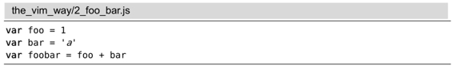
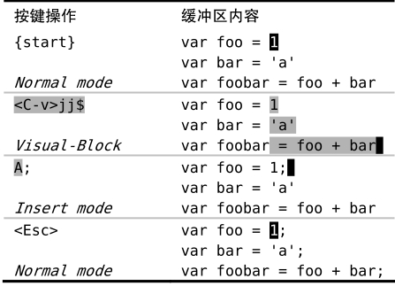

技巧26在长短不一的高亮块后添加文本
列块可视模式在操作由行列组成的方形代码块时表现得很好，然而，它并不仅限于操作方形的文本区域。
我们已经见过以下的JavaScript代码片段：

这段代码有连续3行，每行的长度各不相同，而我们想在每行结尾添加一个分号。在技巧2中，我们使用.命令解决了此问题，不过，用列块可视模式也可以完成该任务，具体操作参见表4-5。
在进入列块可视模式后，我们按$键把选区扩大到每行的行尾。乍一看，人们也许觉得这会很难，因为每一行的长度都是不一样的。然而在这个场景中，Vim知道我们是想把选区扩大到所选中的这些行的结尾，它会让我们打破方形的限制，创建出一个右边界长短不一的文本选区。
确定好选区后，用A命令就可以在每行的结尾添加内容（参见Vim对“i”及“a”键的约定）。此命令让我们进入插入模式，且使光标停留在顶行。处于插入模式期间，任何输入的内容只出现在顶行，然而一旦返回到普通模式，这些修改就会被扩散到其余选中的行上。
表4-5在列块可视模式中为多行添加分号

Vim 对“i”及“a”键的约定
Vim对于从普通模式切换到插入模式的命令有几个约定，i命令和a命令都完成此切换，并分别把光标置于当前字符之前或之后，I命令和A命令的表现类似，只是它们分别把光标置于当前行的开头和结尾。
Vim 对于从列块可视模式切换到插入模式的命令也遵从类似的约定。I 命令和A命令都完成此切换，并分别把光标置于选区的开头和结尾。那i 和a命令呢，它们在可视模式里干什么？
在可视模式及操作符待决模式中，i和a键沿用一个不同的约定。它们会被当作一个文本对象的组成部分，我们将在技巧51中深入探讨文本对象。如果你在列块可视模式里选中了一块区域，并且很奇怪为什么按i键没进入插入模式，那么换用I键试一下。
(1) http://vimcasts.org/e/2